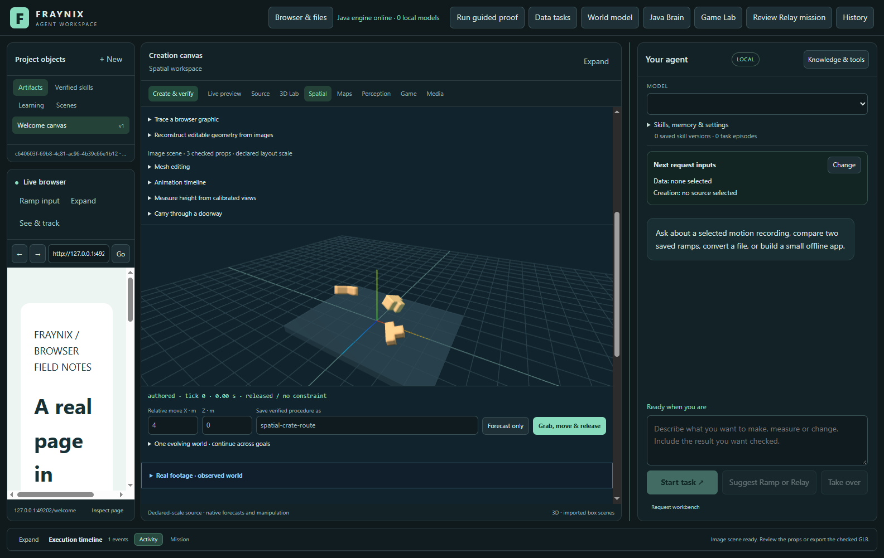
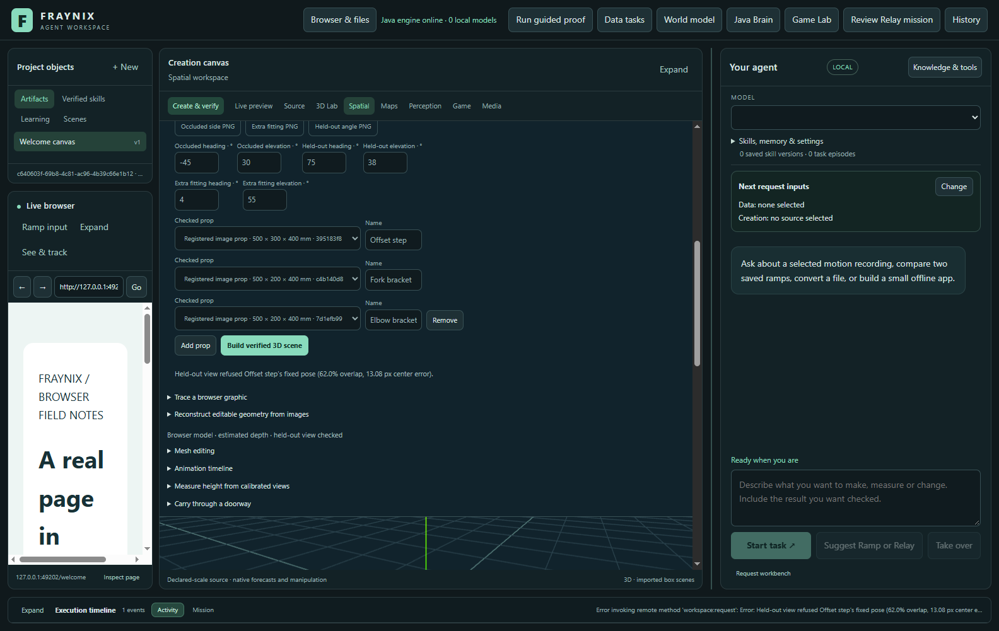
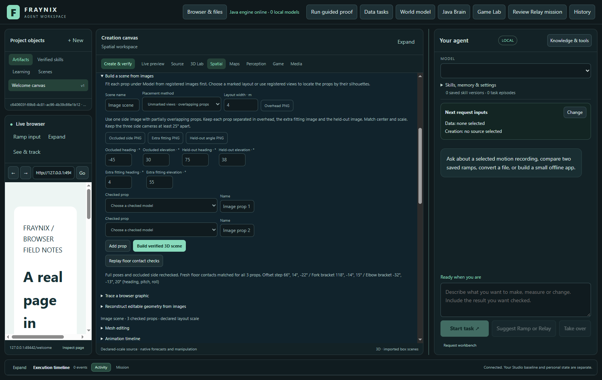

Recover partly occluded props with an extra view
Resolve a partially hidden prop from a clearer angle. Check the combined side silhouette and verify the fixed poses from an independent view before saving.

Three editable meshes and colliders recovered from the registered views

The independent angle refuses a displaced prop after the occluded side checks

All camera values and the three floor contacts rechecked after restart
System files
Open source